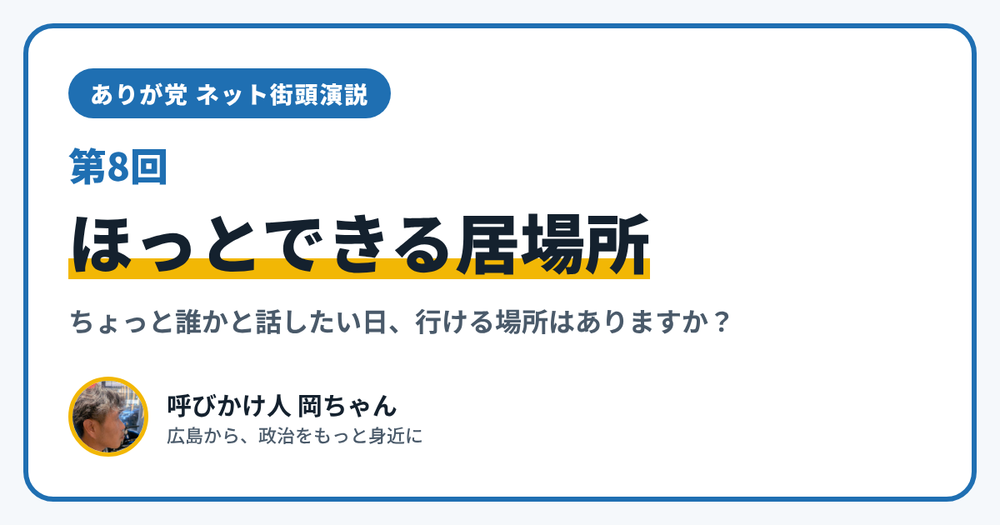

ありが党 ネット街頭演説 第8回｜ほっとできる「居場所」

こんにちは、ありが党の呼びかけ人、岡ちゃんです。今日のネット街頭演説のテーマは「ほっとできる居場所」です。
家と、仕事や病院のあいだを行き来するだけの毎日になっていませんか？ 「ちょっと誰かと話したいな」と思っても、行ける場所が思いつかない。そんなこと、ありませんか？
気軽に顔を出せて、人とゆるくつながれる場所は、まちの中に少しずつあります。今日は、そんな場所を2つ紹介します。
障がいのある人が通える「地域活動支援センター」
1つめは「地域活動支援センター」です。障がいのある人が地域で暮らしていくための場所で、広島市の障がい福祉サービスの案内にものっています。
- 日中に通って、ものづくりなどの創作活動や、作業（生産活動）ができる場所があります
- 地域の人との交流や、ふだんの暮らしの相談ができる場所もあります
- 運営しているのは、社会福祉法人やNPO法人など、地域の団体です
「働く」でも「家にいる」でもない、そのあいだの場所があることを、僕はもっと知ってほしいと思っています。
地域の誰もが参加できる「いきいきサロン」
2つめは、地域の「いきいきサロン」です。たとえば広島市東区の案内では、サロンは「地域に住む誰もが参加できる交流の場」と紹介されています。
- 町内会や地区の社会福祉協議会、ボランティアグループなど、地域の人たちが開いています
- 体操、お茶とおしゃべり、手芸、カラオケ、講座など、内容はサロンごとにいろいろです
- 参加費は、無料のところから、月に数百円〜1,000円ほどのところまでさまざまです
東区では、区の社会福祉協議会が問い合わせ先になっています。ほかの区の方も、住んでいる区の社会福祉協議会に聞いてみてください。
僕が大事にしたいこと
僕は、障がいがあってもなくても、ふらっと立ち寄れて「また来てね」と言ってもらえる場所が、まちにもっと増えたらいいと思っています。車椅子でも入りやすいか、ひとりでも参加しやすいか。そういうことも、みんなで考えたいです。
あなたにとって、ほっとできる場所はどこですか？ 「こんな場所があったらいいな」という声も大歓迎です。InstagramのDM（@ayu19841002）や、ありが党のページから、あなたの暮らしの声を聞かせてください。
ありが党は、まだ僕ひとりから始めたばかりです。政治をもっと身近にしたいと思う方、一緒に考えてくれる仲間を探しています。InstagramのDM（@ayu19841002）で気軽に声をかけてください。